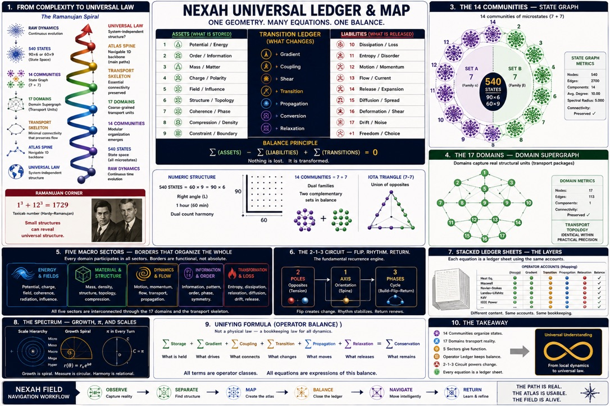
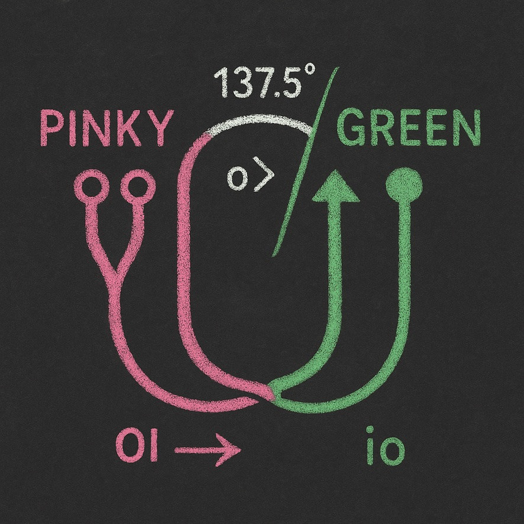

VERIFIED01
Bridge
Tick-24 Joint Return aus Perioden 8 und 12.
BENCH ↗Ein Anschlussplan der vorhandenen A0-Bauteile. Er zeigt ausführbare Rückwege, gemeinsame Ansichten, Kandidaten und harte STOP-Grenzen — ohne aus Nähe eine Maschine zu erfinden.
Eine durchgezogene Kante hat einen eng begrenzten Vertrag. Gestrichelte Linien sind Ansichten oder Kandidaten. Pinke Punktlinien sind ausdrücklich kein Anschluss.
Jede Karte führt zum Original. Die Kurzbeschreibung benennt Funktion und Geltungsgrenze; sie ersetzt weder Quelle noch Receipt.
Tick-24 Joint Return aus Perioden 8 und 12.
BENCH ↗Eigener Witness- und View-Return; unabhängig von der Bridge.
DEMONSTRATOR ↗Orientierungs- und Return-Gate; kein wiedergefundener Gesamtoperator.
ROOT ROOM ↗Ein komplexer Parameter, zwei mathematisch getrennte Ansichten.
BOUNDARY LENS ↗Geometrie- und Ausstellungslinse; Teilmodelle, nicht Gesamtmechanik.
EXHIBITION ↗Display-, Masken- oder Potentialrolle. Keine bestätigte Objektidentität.
SHADOW GLB ↗Astronomie-orientierter Frame; keine automatische ERITH-Zuordnung.
FAMILY MAP ↗Bestehende Source-Seed-/3+1-Dual-Belt-Linie mit eigenem Return.
ERITH LINE ↗Historische Benennung und Bildnähe; kein zugelassener Adapter.
SOURCE SEED ↗Schwarze Region ist eine Bildähnlichkeit, noch keine gemeinsame Entität.
BOUNDARY RECEIPT ↗Die Tafeln helfen beim Orientieren und Zusammenbauen. Ihre Bildsprache darf nur dort zur Kante werden, wo ein eigener Vertrag sie trägt.

Starke Übersicht möglicher Räume, Bridges und Returns. Taxonomie- und Planungsbild; kein universaler Mechanismus.
Groß öffnen ↗
Herkunft und Bildlinie für ERITH. Verbindung zu Earth bleibt eine eigene offene Frage.
Vertrag lesen ↗Nur die Gleichheit ist gesperrt. Linienzug, Teilung und Zeichenfolge bleiben als quellgebundenes Konzeptmaterial lesbar.

Pink trägt die Ausgangsschleife. Der weiße Schnabel oder die Zinke wächst aus ihr heraus und setzt den grünen Schnitt beziehungsweise eine weitere Achse. 137,5°, 0> und 01 → io markieren dabei eine mögliche Orientierungs- oder Phasenlesart.
Kreise, Dreieck, Bogen/P-Form sowie der Knick von i zu L beziehungsweise „1“ bleiben Glyphenkandidaten. Noch nicht behauptet sind ein geometrischer Operator, ein Mechanismus oder eine Identität zwischen diesen Zeichen.
Quellbild groß öffnen ↗
Das Bild passt zur Erinnerung: grüner L‑Bogen, orange/roter Schnitt, Ring auf schwarzem Grund und ein radial weiterwandernder Trace. Es dokumentiert die beabsichtigte Position Two‑Percent Spiral Return.
Ausführbarer Nachbar: Closed Loop Moving World ↗. Quellenstatus: Series Index ↗.
QRT-Plattenanschluss: Der erhaltene Saturn–Titan-Record ist jetzt im bestehenden Family Record Stackplayer ↗ als drei getrennte Cut-Lesarten verbunden: 7″/45, 12″/33⅓ und 10″/78. Das ist ein Quellen-Crosswalk und keine Rekonstruktion der fehlenden Spiral-HTML. Testbeleg ↗
Geteilte Kästen, Stellen und Rückkehrlesarten sind bereits Teil der NumberMagick-Forschung. Der Atlas verweist darauf, ohne daraus eine neue Umrechnung zu bauen.
NumberMagick öffnen ↗Die Tower-Legende bewahrt Platten- und Glyphenspur als getrennte Spalten. Ihre Zeilen sind nicht automatisch deckungsgleich und besitzen keinen TESA-7/8-Konverter.
Tower-Legende öffnen ↗ · Record ↗Rosetta-Alphabet, Frequenzbänder und zugehörige Zeichenbilder sind als Legacy-Quelle inventarisiert. Sie liefern Vergleichsmaterial, aber keine automatische A0-Identität.
Legacy-Register öffnen ↗Dieser Engineering‑Test prüft die Darstellungslogik, nicht die Physik: zwei feste Nodes und die Treppen bleiben invariant; Pink und Green bewegen sich als getrennte Bügel darum.
Owner-Glyphe: LL → T liest T als Verteilung oder Naht zwischen zwei L‑Trägern. TL bleibt die vorhandene Kopplungsform; das Tic‑Tac‑Toe‑Raster ist eine 3×3‑Verteilungsansicht. Deshalb heißen die folgenden Marker ausgeschrieben TEST 1–6 und beanspruchen nicht die T‑Glyphe.
selectedView und transitionMap fehlen im Checkpoint.LL → T, TL und Tic‑Tac‑Toe bleiben getrennte Kandidatenlesarten.Owner-Mapping der gelieferten Visuals. Geprüft wird die Darstellungsgrammatik — nicht Gravitation, Optik, Resonanz oder ein physikalischer Mechanismus.
Wichtig: kß ist hier ein zusammengesetztes Owner-Glyph mit zwei sichtbaren Bewegungszügen. Visual 1 setzt die zweite Form betaähnlich; das erzeugt keine Gleichheit von ß, Beta oder Zeta. Visual 2 bleibt unterstützende Top‑View und wird nicht in die Kette gezwungen.
kß-Trägers geführt; beide Kanäle bleiben unterscheidbar.k·NEG; A0 besitzt B–8–ß, Bß8 / ss / sz und die Double‑Bow-Familie. Eine zusätzliche Lesart k → kB benötigt erst p=(N/V)kBT, Einheiten und Joint-Volumen. Die feinen Querlinien dürfen ß anzeigen, definieren es aber nicht allein.Bestehende Rückbindung: A0 Mathfield · Register → Schnitt/Linse → andere Seite → Aperturstapel ↗ führt B–8–ß bereits als quellgebundene Formvergleichsfamilie. Die vorhandene ILAU-Identität ILAU:INTERTWINED_CLEFS bleibt bestehen; OLS und ORION werden durch diese Ansicht nicht verändert.
Der Atlas speichert keine eigene Wahrheit. Er führt zu ausführbarem Instrument, Maschinenrecord und Science-Desk-Klassifikation zurück.
Nur Zustand 11 schließt; Reset-Isolation und getrennte Provenienz bleiben sichtbar.
Static audit receipt ↗Gespeicherte View, keine Whole-Machine-Inverse und keine neue Mechanik.
Engineering return ↗Direkte Geometrie, Kontextbilder und GLB-Kandidaten bleiben getrennt registriert.
Custody index ↗Source–Seed, 3+1-Unfolding, Seam und Return gehören zur bestehenden ERITH-Linie.
Source-bound route ↗Nodes, Kantentypen, Grenzen und Identitätseffekt dieser Seite sind separat prüfbar.
View contract ↗Deterministische Engineering-Assertions für Anchors, Twin Carrier, W‑Plates, Takt, Return, Owner-Notation sowie kß-, Screen-, Fresnel- und Dimensionsgrenzen.
Testresultat ↗Science Desk erhält diese Assembly Map als Engineering-/Orientierungsreturn, nicht als Finding.
Science Desk ↗Die Grenzen gehören zum Bauplan. Ein späterer Adapter darf sie nur mit eigenem Vertrag, Kontrollen und Owner-Entscheidung überwinden.
Bridge und Tower erhalten keinen gemeinsamen Takt, Carrier oder Ursache.
Shadow, Sphere, Mandelbrot-Innenraum und Pin sind nicht automatisch dasselbe Objekt.
Namens- und Bildnähe ersetzt keinen typisierten, zugelassenen Adapter.
Ähnliche Form, Farbe oder Symbolik erzeugt weder Relation noch Finding.
Atlas-Platzierung ändert keine Source Authority, Evidence State oder Publikationsfreigabe.
Return: Der Atlas ordnet den vorhandenen Bestand. Das Science Desk klassifiziert; die Bench führt aus; Originalquellen belegen.